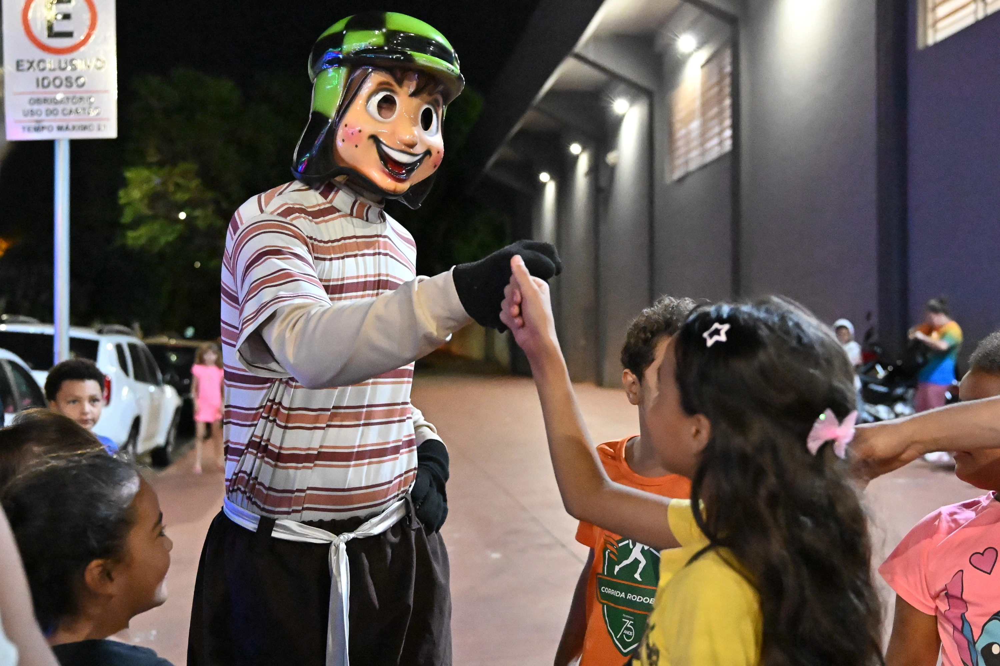
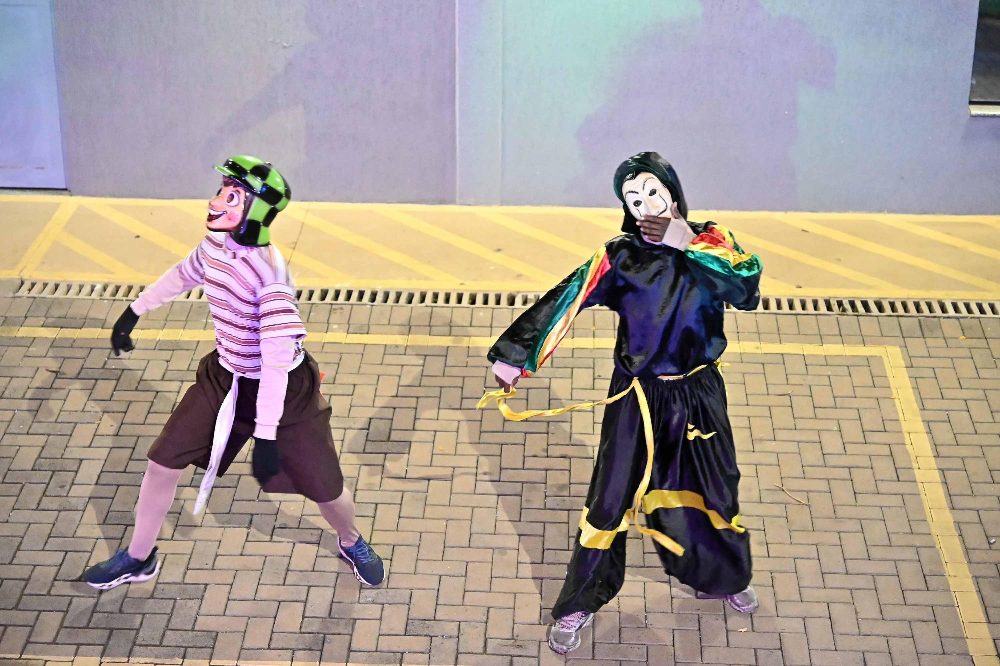
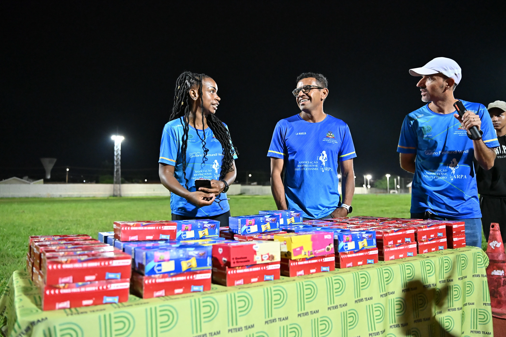
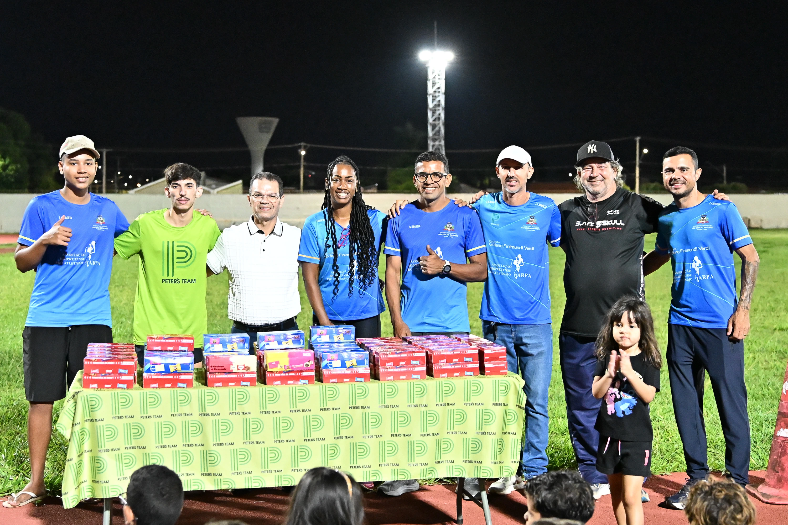

Um dia especial para celebrar a alegria, a amizade e cada pequena grande conquista dos nossos atletas. No dia 12 de outubro, o Centro Esportivo do Eldorado, em São José do Rio Preto, recebeu a Festa do Dia das Crianças da ARPA-RP.
A programação teve tobogã inflável, personagens fantasiados e muita diversão para as crianças, que aproveitaram o dia ao lado dos colegas de treino e da comunidade.
A festa contou com o patrocínio do Instituto Rodobens e com o trabalho do treinador Peter Camargo, da assessoria e da administração da ARPA-RP, com Edinho entre os responsáveis pela organização. Também foram doadas 100 caixas de bombom, com patrocínio de Piovan Gui.
PRONTO PARA COMEÇAR?
Chame no nosso WhatsApp e venha fazer parte da ARPA-RP.